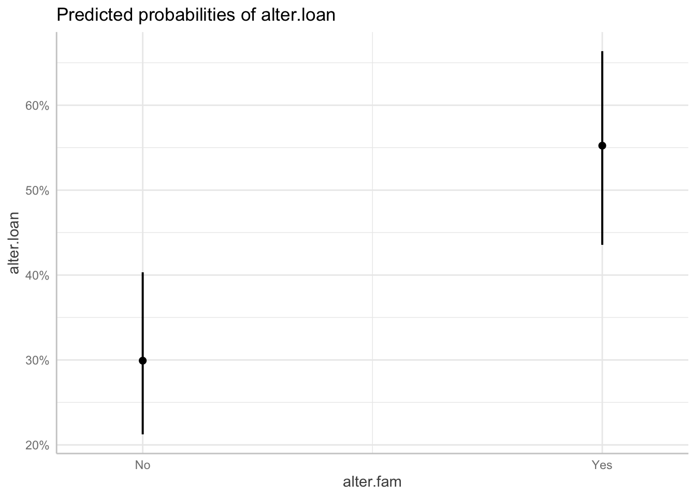
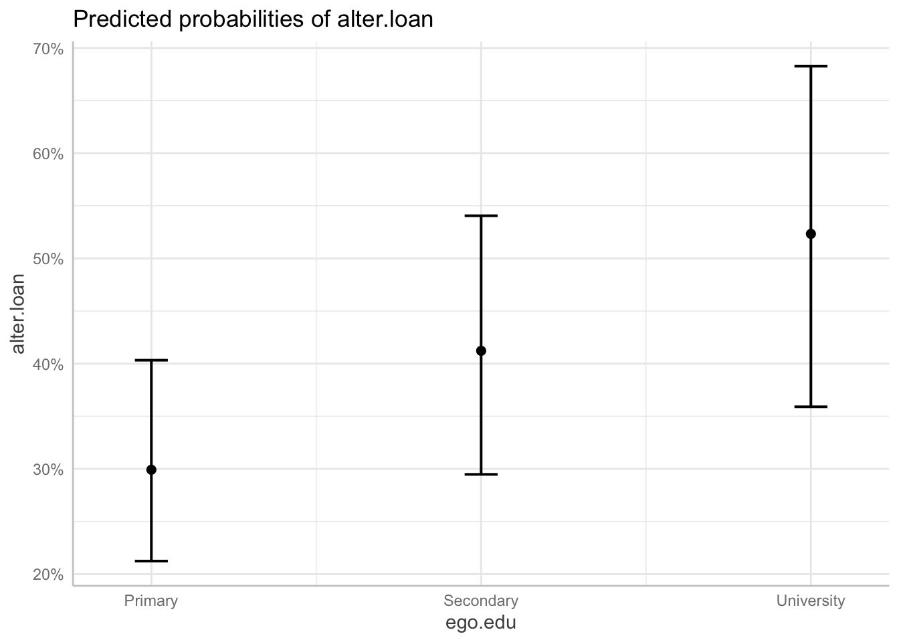

Chapter 6 Multilevel modeling of ego-network data
6.1 Overview
This chapter is still in progress, in the meantime see the multilevel modeling slides in the workshop folder (Slides subfolder). Vacca (2018) provides a review and illustration of multilevel modeling for ego-network data. The code below is drawn in part from that article.
6.2 Prepare the data
# Load packages.
library(tidyverse)
library(lme4)
library(car)
library(magrittr)
library(skimr)
library(janitor)
library(broom.mixed)
# Clear the workspace from all previous objects
rm(list=ls())
# Load the data
load("./Data/data.rda")
# Create data frame object for models (level-1 join)
(model.data <- left_join(alter.attr.all, ego.df, by= "ego_ID"))## # A tibble: 4,590 × 20
## alter_ID ego_ID alter_num alter.sex alter.age.cat alter.rel alter.nat
## <dbl> <dbl> <dbl> <fct> <fct> <fct> <fct>
## 1 2801 28 1 Female 51-60 Close family Sri Lanka
## 2 2802 28 2 Male 51-60 Other family Sri Lanka
## 3 2803 28 3 Male 51-60 Close family Sri Lanka
## 4 2804 28 4 Male 60+ Close family Sri Lanka
## 5 2805 28 5 Female 41-50 Close family Sri Lanka
## 6 2806 28 6 Female 60+ Close family Sri Lanka
## 7 2807 28 7 Male 41-50 Other family Sri Lanka
## 8 2808 28 8 Female 36-40 Other family Sri Lanka
## 9 2809 28 9 Female 51-60 Other family Sri Lanka
## 10 2810 28 10 Male 60+ Other family Sri Lanka
## # … with 4,580 more rows, and 13 more variables: alter.res <fct>,
## # alter.clo <dbl>, alter.loan <fct>, alter.fam <fct>, alter.age <dbl>,
## # ego.sex <fct>, ego.age <dbl>, ego.arr <dbl>, ego.edu <fct>, ego.inc <dbl>,
## # empl <dbl>, ego.empl.bin <fct>, ego.age.cat <fct>## Create variables to be used in multilevel models ====
# ============================================================================ =
# Ego-alter age homophily variable
# - - - - - - - - - - - - - - - - -
# (TRUE if alter and ego are in the same age bracket)
model.data %<>%
mutate(alter.same.age = (alter.age.cat==ego.age.cat))
# See result
tabyl(model.data$alter.same.age)## model.data$alter.same.age n percent valid_percent
## FALSE 3228 0.70326797 0.7113266
## TRUE 1310 0.28540305 0.2886734
## NA 52 0.01132898 NA# Recode: TRUE = Yes, FALSE = No
model.data %<>%
mutate(alter.same.age = as.character(alter.same.age),
alter.same.age = fct_recode(alter.same.age,
Yes = "TRUE", No = "FALSE"))
# See result
tabyl(model.data$alter.same.age)## model.data$alter.same.age n percent valid_percent
## No 3228 0.70326797 0.7113266
## Yes 1310 0.28540305 0.2886734
## <NA> 52 0.01132898 NA# Centered/rescaled versions of ego and alter age
# - - - - - - - - - - - - - - - - - - - - - - - -
# This is done for easier interpretation of model coefficients
model.data %<>%
# Ego age centered around its mean and scaled by 5 (1 unit = 5 years)
mutate(ego.age.cen = scale(ego.age, scale= 5),
# Alter age category centered around its mean
alter.age.cat.cen = scale(as.numeric(alter.age.cat), scale= FALSE))
# Count of family members in ego-network
# - - - - - - - - - - - - - - - - - - - - - - - -
model.data %<>%
group_by(ego_ID) %>%
mutate(net.count.fam = sum(alter.fam=="Yes", na.rm=TRUE)) %>%
ungroup()
# Center and rescale by 5 (+1 unit = 5 more family members in ego-network)
model.data %<>%
mutate(net.count.fam.cen = scale(net.count.fam, scale=5)) 6.3 Random intercept models
## m1: Variance components models ====
# ============================================================================ =
# Variance components model: level 1 is ties, level 2 is egos, random intercept,
# no predictor
m1 <- glmer(alter.loan ~ # Dependent variable
(1 | ego_ID), # Intercept (1) varies in level-2 units (ego_ID)
family = binomial("logit"), # Model class (logistic)
data = model.data) # Data object
# View results
car::S(m1)## Generalized linear mixed model fit by ML
## Call: glmer(formula = alter.loan ~ (1 | ego_ID), data = model.data, family =
## binomial("logit"))
##
## Estimates of Fixed Effects:
## Estimate Std. Error z value Pr(>|z|)
## (Intercept) 0.05376 0.09609 0.559 0.576
##
## Exponentiated Fixed Effects and Confidence Bounds:
## Estimate 2.5 % 97.5 %
## (Intercept) 1.055234 0.8740869 1.273923
##
## Estimates of Random Effects (Covariance Components):
## Groups Name Std.Dev.
## ego_ID (Intercept) 0.9001
##
## Number of obs: 4021, groups: ego_ID, 101
##
## logLik df AIC BIC
## -2577.23 2 5158.46 5171.06## m2: Add tie characteristics as predictors (level 1) ====
# ============================================================================ =
# Add alter.fam and alter.same.age as predictors
# See descriptives for the new predictors
tabyl(model.data$alter.fam)## model.data$alter.fam n percent
## No 3202 0.6976035
## Yes 1388 0.3023965tabyl(model.data$alter.same.age)## model.data$alter.same.age n percent valid_percent
## No 3228 0.70326797 0.7113266
## Yes 1310 0.28540305 0.2886734
## <NA> 52 0.01132898 NA# Estimate the model and view results
m2 <- glmer(alter.loan ~ # Dependent variable
alter.fam + alter.same.age + # Tie characteristics
(1 | ego_ID), # Intercept (1) varies in level-2 units (ego_ID)
family = binomial("logit"), # Model class (logistic)
data = model.data) # Data object
car::S(m2)## Generalized linear mixed model fit by ML
## Call: glmer(formula = alter.loan ~ alter.fam + alter.same.age + (1 | ego_ID),
## data = model.data, family = binomial("logit"))
##
## Estimates of Fixed Effects:
## Estimate Std. Error z value Pr(>|z|)
## (Intercept) -0.21556 0.10511 -2.051 0.0403 *
## alter.famYes 1.01248 0.09284 10.906 <2e-16 ***
## alter.same.ageYes 0.20385 0.07951 2.564 0.0104 *
## ---
## Signif. codes: 0 '***' 0.001 '**' 0.01 '*' 0.05 '.' 0.1 ' ' 1
##
## Exponentiated Fixed Effects and Confidence Bounds:
## Estimate 2.5 % 97.5 %
## (Intercept) 0.8060913 0.6560167 0.990498
## alter.famYes 2.7524141 2.2945208 3.301684
## alter.same.ageYes 1.2261126 1.0491859 1.432875
##
## Estimates of Random Effects (Covariance Components):
## Groups Name Std.Dev.
## ego_ID (Intercept) 0.9372
##
## Number of obs: 3972, groups: ego_ID, 100
##
## logLik df AIC BIC
## -2478.16 4 4964.31 4989.46## m3: Add ego characteristics as predictors (level 2) ====
# ============================================================================ =
# Add ego age (ego.age.cen), employment status (ego.empl.bin),
# educational level (ego.edu)
# See descriptives for the new predictors
skim_tee(model.data$ego.age.cen)## ── Data Summary ────────────────────────
## Values
## Name data
## Number of rows 4590
## Number of columns 1
## _______________________
## Column type frequency:
## numeric 1
## ________________________
## Group variables None
##
## ── Variable type: numeric ──────────────────────────────────────────────────────
## skim_variable n_missing complete_rate mean sd p0 p25 p50 p75
## 1 V1 45 0.990 3.00e-16 2.14 -3.85 -1.85 -0.0515 1.95
## p100 hist
## 1 3.95 ▃▇▅▆▅tabyl(model.data$ego.empl.bin)## model.data$ego.empl.bin n percent
## No 900 0.1960784
## Yes 3690 0.8039216tabyl(model.data$ego.edu)## model.data$ego.edu n percent
## Primary 1890 0.4117647
## Secondary 2025 0.4411765
## University 675 0.1470588# Estimate the model and view results
m3 <- glmer(alter.loan ~ alter.fam + alter.same.age + # Tie characteristics
ego.age.cen + ego.empl.bin + ego.edu + # Ego characteristics
(1 | ego_ID), # Intercept (1) varies in level-2 units
family = binomial("logit"), # Model class (logistic)
data = model.data) # Data
car::S(m3)## Generalized linear mixed model fit by ML
## Call: glmer(formula = alter.loan ~ alter.fam + alter.same.age + ego.age.cen +
## ego.empl.bin + ego.edu + (1 | ego_ID), data = model.data, family =
## binomial("logit"))
##
## Estimates of Fixed Effects:
## Estimate Std. Error z value Pr(>|z|)
## (Intercept) -0.61436 0.22533 -2.726 0.00640 **
## alter.famYes 1.00698 0.09285 10.845 < 2e-16 ***
## alter.same.ageYes 0.19790 0.07950 2.489 0.01280 *
## ego.age.cen -0.01306 0.04487 -0.291 0.77100
## ego.empl.binYes 0.07832 0.24560 0.319 0.74982
## ego.eduSecondary 0.49402 0.20962 2.357 0.01843 *
## ego.eduUniversity 0.86478 0.29945 2.888 0.00388 **
## ---
## Signif. codes: 0 '***' 0.001 '**' 0.01 '*' 0.05 '.' 0.1 ' ' 1
##
## Exponentiated Fixed Effects and Confidence Bounds:
## Estimate 2.5 % 97.5 %
## (Intercept) 0.5409853 0.3478433 0.8413706
## alter.famYes 2.7373105 2.2818716 3.2836504
## alter.same.ageYes 1.2188393 1.0429744 1.4243583
## ego.age.cen 0.9870236 0.9039218 1.0777652
## ego.empl.binYes 1.0814648 0.6682807 1.7501120
## ego.eduSecondary 1.6388884 1.0867367 2.4715784
## ego.eduUniversity 2.3744849 1.3203030 4.2703671
##
## Estimates of Random Effects (Covariance Components):
## Groups Name Std.Dev.
## ego_ID (Intercept) 0.879
##
## Number of obs: 3972, groups: ego_ID, 100
##
## logLik df AIC BIC
## -2472.68 8 4961.36 5011.66## m4: Add alter characteristics as predictors (level 1) ====
# ============================================================================ =
# Add alter sex and alter age (centered)
# See descriptives for the new predictors
tabyl(model.data$alter.sex)## model.data$alter.sex n percent
## Female 1297 0.2825708
## Male 3293 0.7174292skim_tee(model.data$alter.age.cat.cen)## ── Data Summary ────────────────────────
## Values
## Name data
## Number of rows 4590
## Number of columns 1
## _______________________
## Column type frequency:
## numeric 1
## ________________________
## Group variables None
##
## ── Variable type: numeric ──────────────────────────────────────────────────────
## skim_variable n_missing complete_rate mean sd p0 p25 p50 p75
## 1 V1 8 0.998 -3.65e-16 1.64 -3.13 -1.13 -0.126 0.874
## p100 hist
## 1 2.87 ▆▅▆▇▆# Estimate the model and view results
m4 <- glmer(alter.loan ~ alter.fam + alter.same.age + # Tie characteristics
ego.age.cen + ego.empl.bin + ego.edu + # Ego characteristics
alter.sex + alter.age.cat.cen + # Alter characteristics
(1 | ego_ID), # Intercept (1) varies in level-2 units
family = binomial("logit"), # Model class (logistic)
data= model.data) # Data
car::S(m4)## Generalized linear mixed model fit by ML
## Call: glmer(formula = alter.loan ~ alter.fam + alter.same.age + ego.age.cen +
## ego.empl.bin + ego.edu + alter.sex + alter.age.cat.cen + (1 | ego_ID), data =
## model.data, family = binomial("logit"))
##
## Estimates of Fixed Effects:
## Estimate Std. Error z value Pr(>|z|)
## (Intercept) -0.79887 0.23621 -3.382 0.000719 ***
## alter.famYes 1.04455 0.09450 11.053 < 2e-16 ***
## alter.same.ageYes 0.18047 0.07984 2.261 0.023788 *
## ego.age.cen -0.02345 0.04544 -0.516 0.605772
## ego.empl.binYes 0.06895 0.24631 0.280 0.779516
## ego.eduSecondary 0.49039 0.21009 2.334 0.019585 *
## ego.eduUniversity 0.87968 0.30015 2.931 0.003381 **
## alter.sexMale 0.25266 0.08596 2.939 0.003290 **
## alter.age.cat.cen 0.03834 0.02475 1.549 0.121299
## ---
## Signif. codes: 0 '***' 0.001 '**' 0.01 '*' 0.05 '.' 0.1 ' ' 1
##
## Exponentiated Fixed Effects and Confidence Bounds:
## Estimate 2.5 % 97.5 %
## (Intercept) 0.4498365 0.2831345 0.7146883
## alter.famYes 2.8421300 2.3615720 3.4204771
## alter.same.ageYes 1.1977844 1.0242872 1.4006692
## ego.age.cen 0.9768214 0.8935895 1.0678057
## ego.empl.binYes 1.0713874 0.6611311 1.7362229
## ego.eduSecondary 1.6329480 1.0817965 2.4648991
## ego.eduUniversity 2.4101365 1.3382884 4.3404380
## alter.sexMale 1.2874404 1.0878229 1.5236881
## alter.age.cat.cen 1.0390877 0.9898894 1.0907312
##
## Estimates of Random Effects (Covariance Components):
## Groups Name Std.Dev.
## ego_ID (Intercept) 0.881
##
## Number of obs: 3972, groups: ego_ID, 100
##
## logLik df AIC BIC
## -2467.02 10 4954.04 5016.91## m5: Add network characteristics as predictors (level 2) ====
# ============================================================================ =
# Add count of family members in network (centered)
# See descriptives for the new predictor
skim_tee(model.data$net.count.fam.cen)## ── Data Summary ────────────────────────
## Values
## Name data
## Number of rows 4590
## Number of columns 1
## _______________________
## Column type frequency:
## numeric 1
## ________________________
## Group variables None
##
## ── Variable type: numeric ──────────────────────────────────────────────────────
## skim_variable n_missing complete_rate mean sd p0 p25 p50 p75
## 1 V1 0 1 7.24e-17 1.02 -1.72 -0.722 -0.122 0.478
## p100 hist
## 1 2.88 ▃▇▅▂▁# Estimate model and see results
m5 <- glmer(alter.loan ~ alter.fam + alter.same.age + # Tie characteristics
ego.age.cen + ego.empl.bin + ego.edu + # Ego characteristics
alter.sex + alter.age.cat.cen + # Alter characteristics
net.count.fam.cen + # Ego-network characteristics
(1 | ego_ID), # Intercept (1) varies in level-2 units
family = binomial("logit"), # Model class (logistic)
data= model.data) # Data
car::S(m5)## Generalized linear mixed model fit by ML
## Call: glmer(formula = alter.loan ~ alter.fam + alter.same.age + ego.age.cen +
## ego.empl.bin + ego.edu + alter.sex + alter.age.cat.cen + net.count.fam.cen + (1
## | ego_ID), data = model.data, family = binomial("logit"))
##
## Estimates of Fixed Effects:
## Estimate Std. Error z value Pr(>|z|)
## (Intercept) -0.85008 0.23451 -3.625 0.000289 ***
## alter.famYes 1.06161 0.09498 11.178 < 2e-16 ***
## alter.same.ageYes 0.18265 0.07983 2.288 0.022144 *
## ego.age.cen -0.02293 0.04473 -0.513 0.608155
## ego.empl.binYes 0.11922 0.24382 0.489 0.624872
## ego.eduSecondary 0.49633 0.20680 2.400 0.016390 *
## ego.eduUniversity 0.94457 0.29758 3.174 0.001503 **
## alter.sexMale 0.25068 0.08596 2.916 0.003541 **
## alter.age.cat.cen 0.03879 0.02474 1.568 0.116875
## net.count.fam.cen -0.17863 0.09517 -1.877 0.060524 .
## ---
## Signif. codes: 0 '***' 0.001 '**' 0.01 '*' 0.05 '.' 0.1 ' ' 1
##
## Exponentiated Fixed Effects and Confidence Bounds:
## Estimate 2.5 % 97.5 %
## (Intercept) 0.4273806 0.2698984 0.6767516
## alter.famYes 2.8910255 2.3999768 3.4825454
## alter.same.ageYes 1.2003973 1.0265250 1.4037200
## ego.age.cen 0.9773295 0.8953033 1.0668708
## ego.empl.binYes 1.1266164 0.6986086 1.8168463
## ego.eduSecondary 1.6426831 1.0952898 2.4636473
## ego.eduUniversity 2.5717065 1.4352318 4.6080878
## alter.sexMale 1.2848996 1.0856839 1.5206700
## alter.age.cat.cen 1.0395548 0.9903505 1.0912039
## net.count.fam.cen 0.8364152 0.6940853 1.0079314
##
## Estimates of Random Effects (Covariance Components):
## Groups Name Std.Dev.
## ego_ID (Intercept) 0.8648
##
## Number of obs: 3972, groups: ego_ID, 100
##
## logLik df AIC BIC
## -2465.28 11 4952.56 5021.72# Results as tidy data frame
tidy(m5)## # A tibble: 11 × 7
## effect group term estimate std.error statistic p.value
## <chr> <chr> <chr> <dbl> <dbl> <dbl> <dbl>
## 1 fixed <NA> (Intercept) -0.850 0.235 -3.62 2.89e- 4
## 2 fixed <NA> alter.famYes 1.06 0.0950 11.2 5.25e-29
## 3 fixed <NA> alter.same.ageYes 0.183 0.0798 2.29 2.21e- 2
## 4 fixed <NA> ego.age.cen -0.0229 0.0447 -0.513 6.08e- 1
## 5 fixed <NA> ego.empl.binYes 0.119 0.244 0.489 6.25e- 1
## 6 fixed <NA> ego.eduSecondary 0.496 0.207 2.40 1.64e- 2
## 7 fixed <NA> ego.eduUniversity 0.945 0.298 3.17 1.50e- 3
## 8 fixed <NA> alter.sexMale 0.251 0.0860 2.92 3.54e- 3
## 9 fixed <NA> alter.age.cat.cen 0.0388 0.0247 1.57 1.17e- 1
## 10 fixed <NA> net.count.fam.cen -0.179 0.0952 -1.88 6.05e- 2
## 11 ran_pars ego_ID sd__(Intercept) 0.865 NA NA NA## Plot predictor effects ====
# ============================================================================ =
library(ggeffects)
# Probability of financial support as a function of alter.fam
ggpredict(m5, "alter.fam") ## # Predicted probabilities of alter.loan
##
## alter.fam | Predicted | 95% CI
## ------------------------------------
## No | 0.30 | [0.21, 0.40]
## Yes | 0.55 | [0.44, 0.66]
##
## Adjusted for:
## * alter.same.age = No
## * ego.age.cen = -0.03
## * ego.empl.bin = No
## * ego.edu = Primary
## * alter.sex = Female
## * alter.age.cat.cen = -0.05
## * net.count.fam.cen = 0.00
## * ego_ID = 0 (population-level)# You can convert it to a tidy data frame
ggpredict(m5, "alter.fam") %>%
as_tibble()## # A tibble: 2 × 6
## x predicted std.error conf.low conf.high group
## <fct> <dbl> <dbl> <dbl> <dbl> <fct>
## 1 No 0.299 0.234 0.212 0.403 1
## 2 Yes 0.552 0.239 0.436 0.664 1# You can also plot the result
ggpredict(m5, "alter.fam") %>%
plot
# Probability of financial support as a function of ego.edu
ggpredict(m5, "ego.edu") %>%
plot
6.4 Random slope models
## m6: Random slope for alter.fam ====
# ============================================================================ =
# Fit model
set.seed(2707)
m6 <- glmer(alter.loan ~ alter.fam + alter.same.age + # Tie characteristics
ego.age.cen + ego.empl.bin + ego.edu + # Ego characteristics
alter.sex + alter.age.cat.cen + # Alter characteristics
net.count.fam.cen + # Ego-network characteristics
(1 + alter.fam | ego_ID), # Both intercept (1) and alter.fam
# slppe vary in level-2 units (ego_ID)
family = binomial("logit"), # Model class (logistic)
data = model.data) # Data## Warning in checkConv(attr(opt, "derivs"), opt$par, ctrl = control$checkConv, :
## Model failed to converge with max|grad| = 0.00200685 (tol = 0.002, component 1)# Re-fit with starting values from previous fit to address convergence warnings
# Get estimate values from previous fit
ss <- getME(m6, c("theta", "fixef"))
# Refit by setting ss as starting values
m6 <- glmer(alter.loan ~ alter.fam + alter.same.age + # Tie characteristics
ego.age.cen + ego.empl.bin + ego.edu + # Ego characteristics
alter.sex + alter.age.cat.cen + # Alter characteristics
net.count.fam.cen + # Ego-network characteristics
(1 + alter.fam | ego_ID), # Both intercept (1) and alter.fam
start= ss, #
# slppe vary in level-2 units (ego_ID)
family = binomial("logit"), # Model class (logistic)
data= model.data) # Data
# View results
car::S(m6)## Generalized linear mixed model fit by ML
## Call: glmer(formula = alter.loan ~ alter.fam + alter.same.age + ego.age.cen +
## ego.empl.bin + ego.edu + alter.sex + alter.age.cat.cen + net.count.fam.cen + (1
## + alter.fam | ego_ID), data = model.data, family = binomial("logit"), start =
## ss)
##
## Estimates of Fixed Effects:
## Estimate Std. Error z value Pr(>|z|)
## (Intercept) -0.91969 0.24607 -3.738 0.000186 ***
## alter.famYes 1.10130 0.12286 8.964 < 2e-16 ***
## alter.same.ageYes 0.18966 0.08067 2.351 0.018712 *
## ego.age.cen -0.02932 0.04559 -0.643 0.520083
## ego.empl.binYes 0.16614 0.25193 0.659 0.509591
## ego.eduSecondary 0.52523 0.21101 2.489 0.012807 *
## ego.eduUniversity 1.00013 0.30745 3.253 0.001142 **
## alter.sexMale 0.25913 0.08691 2.981 0.002868 **
## alter.age.cat.cen 0.04230 0.02515 1.682 0.092567 .
## net.count.fam.cen -0.18543 0.09693 -1.913 0.055745 .
## ---
## Signif. codes: 0 '***' 0.001 '**' 0.01 '*' 0.05 '.' 0.1 ' ' 1
##
## Exponentiated Fixed Effects and Confidence Bounds:
## Estimate 2.5 % 97.5 %
## (Intercept) 0.3986409 0.2461083 0.6457098
## alter.famYes 3.0080852 2.3643516 3.8270860
## alter.same.ageYes 1.2088437 1.0320646 1.4159027
## ego.age.cen 0.9711040 0.8881019 1.0618634
## ego.empl.binYes 1.1807410 0.7206271 1.9346335
## ego.eduSecondary 1.6908402 1.1181228 2.5569111
## ego.eduUniversity 2.7186307 1.4881543 4.9665232
## alter.sexMale 1.2957964 1.0928433 1.5364401
## alter.age.cat.cen 1.0432040 0.9930348 1.0959078
## net.count.fam.cen 0.8307451 0.6870043 1.0045607
##
## Estimates of Random Effects (Covariance Components):
## Groups Name Std.Dev. Corr
## ego_ID (Intercept) 0.9054
## alter.famYes 0.6697 -0.27
##
## Number of obs: 3972, groups: ego_ID, 100
##
## logLik df AIC BIC
## -2460.22 13 4946.44 5028.17# Results as tidy data frame
tidy(m6)## # A tibble: 13 × 7
## effect group term estimate std.error statistic p.value
## <chr> <chr> <chr> <dbl> <dbl> <dbl> <dbl>
## 1 fixed <NA> (Intercept) -0.920 0.246 -3.74 1.86e- 4
## 2 fixed <NA> alter.famYes 1.10 0.123 8.96 3.13e-19
## 3 fixed <NA> alter.same.ageYes 0.190 0.0807 2.35 1.87e- 2
## 4 fixed <NA> ego.age.cen -0.0293 0.0456 -0.643 5.20e- 1
## 5 fixed <NA> ego.empl.binYes 0.166 0.252 0.659 5.10e- 1
## 6 fixed <NA> ego.eduSecondary 0.525 0.211 2.49 1.28e- 2
## 7 fixed <NA> ego.eduUniversity 1.00 0.307 3.25 1.14e- 3
## 8 fixed <NA> alter.sexMale 0.259 0.0869 2.98 2.87e- 3
## 9 fixed <NA> alter.age.cat.cen 0.0423 0.0251 1.68 9.26e- 2
## 10 fixed <NA> net.count.fam.cen -0.185 0.0969 -1.91 5.57e- 2
## 11 ran_pars ego_ID sd__(Intercept) 0.905 NA NA NA
## 12 ran_pars ego_ID cor__(Intercept).alte… -0.275 NA NA NA
## 13 ran_pars ego_ID sd__alter.famYes 0.670 NA NA NA6.5 Tests of significance
## Test significance of ego-level random intercept ====
# ============================================================================ =
# Test that there is significant clustering by egos, i.e. ego-level variance
# of random intercepts is significantly higher than 0. This means comparing
# the random-intercept null model (i.e. "variance components" model) to the
# single-level null model.
# First estimate the simpler, single-level null model: m0, which is nested in m1
m0 <- glm(alter.loan ~ 1, family = binomial("logit"), data= model.data)
# Then conduct a LRT comparing deviance of m0 to deviance of m1.
# Difference between deviances.
(val <- -2*logLik(m0)) - (-2*logLik(m1))## 'log Lik.' 416.3027 (df=1)# Compare this difference to chi-squared distribution with 1 degree of freedom.
pchisq(val, df= 1, lower.tail = FALSE)## 'log Lik.' 0 (df=1)# The same result is obtained using the anova() function
anova(m1, m0, refit=FALSE)## Data: model.data
## Models:
## m0: alter.loan ~ 1
## m1: alter.loan ~ (1 | ego_ID)
## npar AIC BIC logLik deviance Chisq Df Pr(>Chisq)
## m0 1 5572.8 5579.1 -2785.4 5570.8
## m1 2 5158.5 5171.1 -2577.2 5154.5 416.3 1 < 2.2e-16 ***
## ---
## Signif. codes: 0 '***' 0.001 '**' 0.01 '*' 0.05 '.' 0.1 ' ' 1## Test significance of ego-level random slope for alter.fam ====
# ============================================================================ =
# This is done with a LRT comparing the same model with random slope for alter.fam
# (m6) and without it (m5). Note that m5 is nested in m6, that's why we can
# use LRT.
# Difference between deviances.
(val <- (-2*logLik(m5)) - (-2*logLik(m6)))## 'log Lik.' 10.12578 (df=11)# Compare this difference to chi-squared distribution with 2 degrees of freedom.
pchisq(val, df= 2, lower.tail = FALSE)## 'log Lik.' 0.006327255 (df=11)# Same results with anova() function
anova(m6, m5, refit=FALSE)## Data: model.data
## Models:
## m5: alter.loan ~ alter.fam + alter.same.age + ego.age.cen + ego.empl.bin + ego.edu + alter.sex + alter.age.cat.cen + net.count.fam.cen + (1 | ego_ID)
## m6: alter.loan ~ alter.fam + alter.same.age + ego.age.cen + ego.empl.bin + ego.edu + alter.sex + alter.age.cat.cen + net.count.fam.cen + (1 + alter.fam | ego_ID)
## npar AIC BIC logLik deviance Chisq Df Pr(>Chisq)
## m5 11 4952.6 5021.7 -2465.3 4930.6
## m6 13 4946.4 5028.2 -2460.2 4920.4 10.126 2 0.006327 **
## ---
## Signif. codes: 0 '***' 0.001 '**' 0.01 '*' 0.05 '.' 0.1 ' ' 1References
Duijn, Marijtje A. J van. 2013. “Multilevel Modeling of Social Network and Relational Data.” In The SAGE Handbook of Multilevel Modeling, edited by Jeffrey S. Simonoff, Marc A. Scott, and Brian D. Marx, 599–618. Los Angeles: SAGE.
McCarty, Christopher, Miranda J. Lubbers, Raffaele Vacca, and José Luis Molina. 2019. Conducting Personal Network Research: A Practical Guide. Methodology in the Social Sciences. New York City: The Guilford Press.
Perry, Brea L., Steve Borgatti, and Bernice A. Pescosolido. 2018. Egocentric Network Analysis: Foundation, Methods, and Models. Cambridge University Press.
Rasbash, J., F. Steele, and George Reckie. 2008. LEMMA: Learning Environment for Multilevel Methodology and Applications. University of Bristol: Centre for Multilevel Modelling. https://www.cmm.bris.ac.uk/lemma.
Snijders, Tom, and R. J. Bosker. 2012. Multilevel Analysis: An Introduction to Basic and Advanced Multilevel Modeling. 2nd edition. London; Thousand Oaks, Calif: SAGE Publications.
Vacca, Raffaele. 2018. “Multilevel Models for Personal Networks: Methods and Applications.” Statistica Applicata - Italian Journal of Applied Statistics 30 (1): 59–97. https://doi.org/10.26398/IJAS.0030-003.
Vacca, Raffaele, Jeanne-Marie R. Stacciarini, and Mark Tranmer. 2019. “Cross-Classified Multilevel Models for Personal Networks: Detecting and Accounting for Overlapping Actors.” Sociological Methods & Research, November, 004912411988245. https://doi.org/10.1177/0049124119882450.